Fly an F16.
------------------------------------------------------------------------
See also DefaultACData, DefaultACState, AC, ACInit, ACPlot, DrawAC,
HUD, HUDCntrl, ACModes, TimeGUI
------------------------------------------------------------------------
Contents
Global for the time GUI
global simulationAction
simulationAction = ' ';
Global for the HUD
global hUDOutput
hUDOutput = struct('pushbutton1',0,'pushbutton2',0,'checkbox1',0,...
'checkbox2',0,'checkbox3',0);
load the F16 database
d = DefaultACData;
Load the Trim State and Control Settings (found via ACTrim)
trimData = load('F16TrimData.mat');
d.control = trimData.control;
x = trimData.x;
Time
t = 0;
dT = 0.1;
nSim = 200/dT;
Initialize the model
d = ACInit( x, d );
Compute the linearized model
gLin = AC( x, 0, 0, d, 'linalpha');
aC = get( gLin, 'a' );
Display aircraft rigid body modes
ACModes( gLin );
--------------------------------------------------------------------------------------------------------------
Rigid Body Aircraft Modes
Phugoid Short Period Dutch Roll Roll Spiral
s -1.1456 ± 1.0491 -0.0085 ± 0.0639 -0.4338 ± 3.1624 -3.6057 -0.0134
zeta 0.737 0.132 0.136 0.000 0.000
tau 5.99 98.31 1.99 0.28 74.77
--------------------------------------------------------------------------------------------------------------
phi 1.65e-04 ± -1.22e-04 3.13e-06 ± -5.75e-06 -3.83e-02 ± -3.08e-01 -2.77e-01 1.00e+00
theta 5.73e-02 ± -2.92e-02 -3.90e-04 ± -1.99e-03 8.71e-05 ± 2.12e-04 -1.40e-05 2.15e-04
omega x -5.74e-05 ± 3.17e-04 2.90e-07 ± 4.55e-08 1.00e+00 ± 0.00e+00 1.00e+00 -1.58e-02
omega y -3.50e-02 ± 9.35e-02 1.30e-04 ± -7.94e-06 -2.28e-04 ± -3.29e-04 5.74e-05 -2.18e-04
omega z -7.27e-06 ± -3.06e-05 4.37e-07 ± -3.72e-07 -2.82e-01 ± 3.25e-01 1.39e-02 6.29e-02
vT 1.00e+00 ± 0.00e+00 1.00e+00 ± 0.00e+00 -6.13e-04 ± -6.82e-04 3.60e-05 -6.55e-01
alpha 8.31e-02 ± 2.04e-02 -1.34e-04 ± 1.36e-06 -1.14e-04 ± 4.59e-05 -8.49e-06 7.59e-05
beta 1.35e-05 ± -2.40e-05 -2.16e-08 ± -1.40e-08 -1.11e-01 ± -9.59e-02 -1.92e-03 3.20e-03
--------------------------------------------------------------------------------------------------------------
Set up the HUD
dHUD.atmData = d.atmData ;
dHUD.atmUnits = 'eng';
cHUD.control = d.control;
cHUD.elevatorMax = 90;
cHUD.aileronMax = 90;
cHUD.rudderMax = 90;
cHUD.dT = dT;
hHUD = HUD( 'init', dHUD, x, [], cHUD );

Set up the aircraft display
gF16 = load( 'gF16' );
hF16 = DrawAC( 'init', gF16, x, [], d.atmUnits );
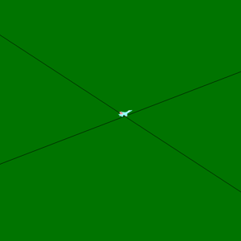
Initialize the plots
plots = [ 'Euler angles ';...
'Quaternion ';...
'Quaternion NED To B';...
'Angular rate ';...
'Position ECI ';...
'Velocity ';...
'Alpha ';...
'Rudder ';...
'Throttle ';...
'Aileron ';...
'Elevator '];
dPlot = ACPlot( x, 'init', plots, d, 200, dT, nSim );
Initialize the time display
tToGoMem.lastJD = 0;
tToGoMem.lastStepsDone = 0;
tToGoMem.kAve = 0;
[ ratioRealTime, tToGoMem ] = TimeGUI( nSim, 0, tToGoMem, 0, dT, 'F16 Simulation' );
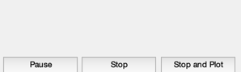
Simulation Loop
for k = 1:nSim
[ ratioRealTime, tToGoMem ] = TimeGUI( nSim, k, tToGoMem, ratioRealTime, dT );
hHUD = HUD( 'run', dHUD, x, hHUD, cHUD );
d.control = hHUD.control;
dPlot = ACPlot( x, 'store', dPlot, d.control );
hF16 = DrawAC( 'run', gF16, x, hF16, d.atmUnits );
x = AC( x, t, dT, d );
t = t + dT;
switch simulationAction
case 'pause'
pause
simulationAction = ' ';
case 'stop'
return;
case 'plot'
break;
end
HUDCntrl;
end
TimeGUI('close');
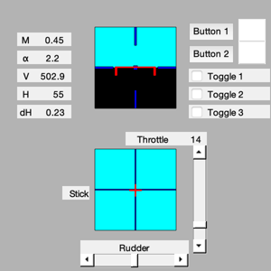

Create the plots
ACPlot( x, 'plot', dPlot );
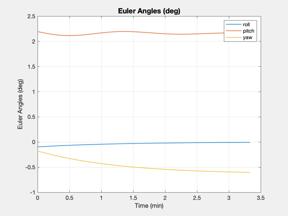 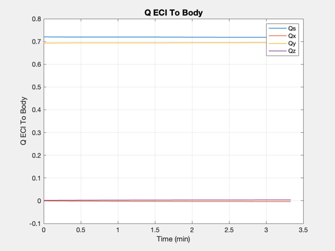 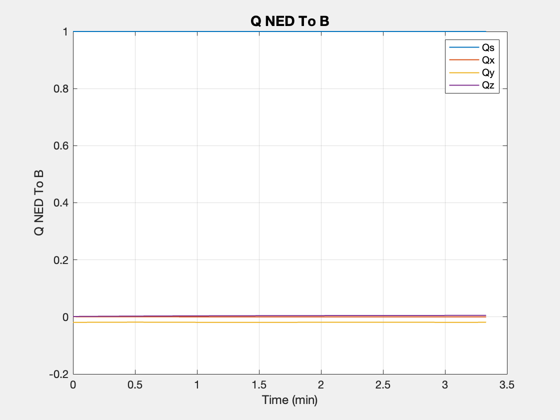 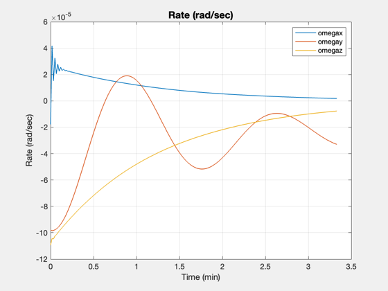 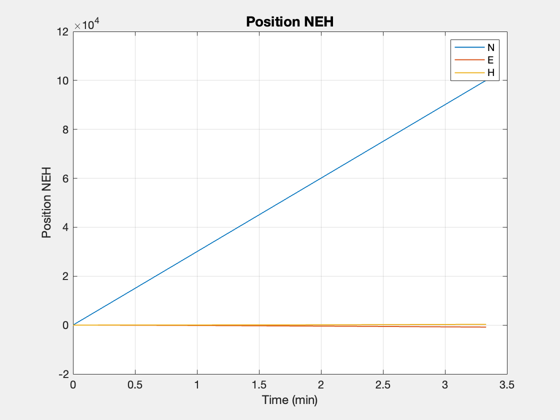 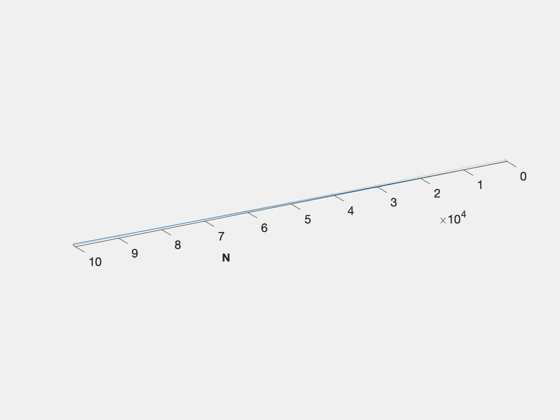 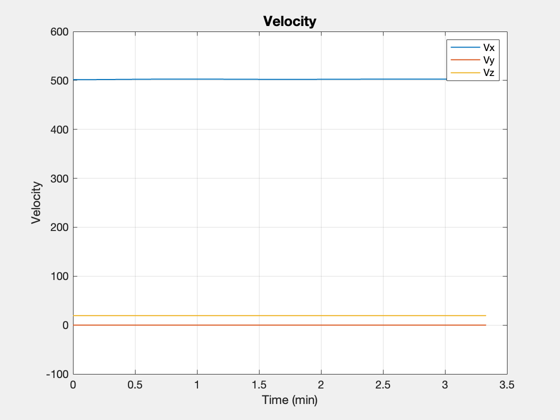 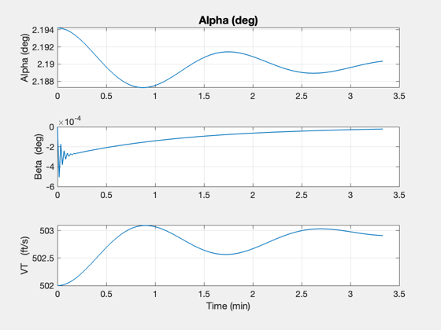 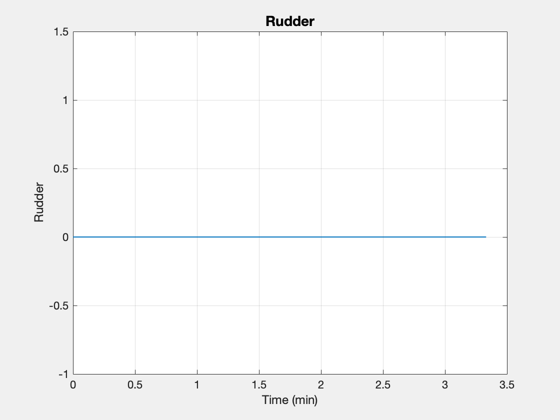 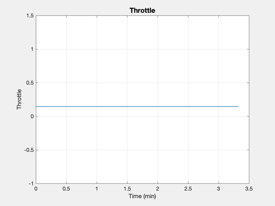 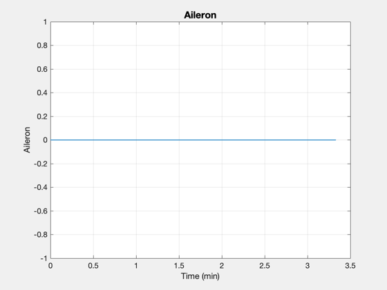 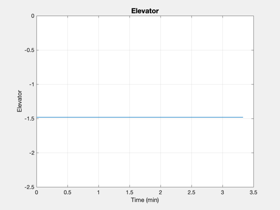